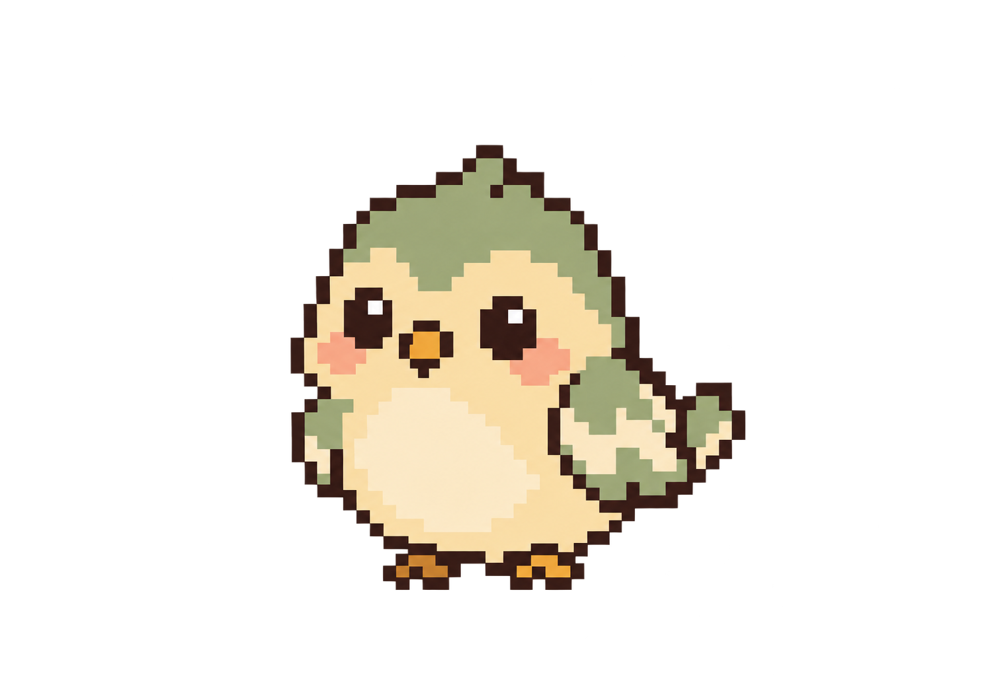

<!doctype html><html lang="zh-Hant"><meta charset="utf-8"><meta name="viewport" content="width=device-width,initial-scale=1"><title>幼鳥外觀預覽</title><style>
body{margin:0;background:#f7f0dd;color:#342e2d;font:18px sans-serif;text-align:center}main{max-width:900px;margin:32px auto;padding:16px}.garden{position:relative;aspect-ratio:3/2;background:url('assets/garden-detailed-day.png') center/cover;border:6px solid #675146;border-radius:20px;overflow:hidden}.bird{position:absolute;width:36%;height:auto;left:32%;bottom:20%;image-rendering:pixelated;animation:bob 1.2s steps(2,end) infinite}@keyframes bob{50%{transform:translateY(-3px)}}@media(prefers-reduced-motion:reduce){.bird{animation:none}}a{color:#55435d}</style><main><h1>幼鳥 · 鼠尾草綠配色</h1><p>鼠尾草綠頭頂與翅膀，保留奶油肚子及蜜桃腮紅。</p><div class="garden"></div><p>幼鳥外觀展示，不更動目前寵物存檔。</p><a href="index.html?v=bird-sage-restored&preview=bird">回到完整寵物花園</a></main></html>
